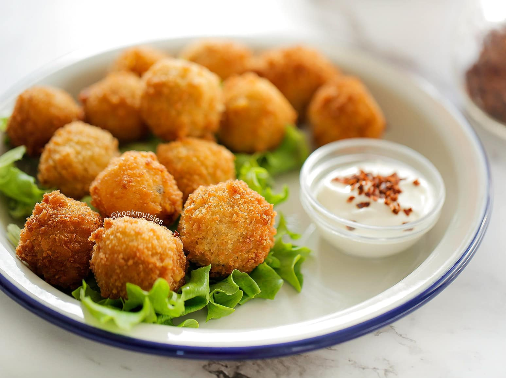
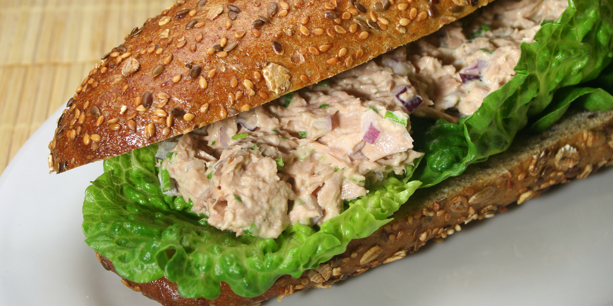

Hier heb ik een paar recepten voor snacks! Ze zijn erg lekker, en ook leuk om te maken.
Snacks
Pittige kaas-ballen
Ingredienten

- 45 g roomboter
- 45 g bloem
- 200 ml water
- 2 g zwarte peper
- 2 g paprikapoeder
- 3 g zout
- 2 g knoflookpoeder
- 1 kipbouillonblokje
- 250 g cheddar kaas
- 100 g geraspte kaas
- 25 g jalapeñopepers uit pot
- 50 g bloem
- 2 g zwarte peper
- 2 g knoflookpoeder
- 2 eieren
- 160 g panko broodkruimels
Vulling:
Bloemmix:
Garnering:
Voorbereiding
Smelt de roomboter in een pan op middellaag vuur en voeg de patentbloem toe. Roer 2 minuten met een garde. Voeg het water, de zwarte peper, het paprikapoeder, zout en knoflookpoeder toe. Verkruimel het kippenbouillonblokje boven de pan. Meng goed. Voeg de cheddar en geraspte kaas toe, meng alles en voeg dan de fijngesneden jalapeño toe. Roer alles samen tot een gladde massa.
Bedek de ovenschaal met bakpapier. Verdeel het kaasmengsel over een ovenschaal en smeer het gelijkmatig uit. Dek af met plasticfolie. Zet het kaasmengsel 1 uur in de koelkast om op te stijven. Snijd het afgekoelde kaasmengsel in stukken.
Neem ongeveer 13 gram van het kaasmengsel en vorm tot een bal, ongeveer zo groot als een golfballetje. Doe de patentbloem samen met de zwarte peper en het knoflookpoeder in een diepe kom. Meng goed. Kluts de eieren in een kom en doe de panko broodkruimels in een derde kom. Haal de bal achtereenvolgens door de bloemmix, het ei en de panko broodkruimels. Herhaal tot je ongeveer 50 kaasballen hebt.
Verhit de zonnebloemolie in een koekenpan of braadpan. Bak, als de olie goed heet is (180 °C), de kaasballen in 5 tot 6 minuten goudbruin. Keer regelmatig om. Schep de ballen uit de olie met een schuimspaan en laat ze uitlekken op keukenpapier.
Tonijnsalade broodjes
Ingredienten

- Een halve ui
- 5 g bieslook
- 1 appel
- 50 g tonijn in olie
- 1 eetlepel ketchup
- 3 eetlepels mayonaise
- Snufje zout en peper
- 1 handje sla
- Broodjes naar keuze
- 1 tomaat
Voorbereiding
Snipper de ui, snijd de appel in blokjes van 1 cm, snijd de tomaat in blokjes van 1 cm en snijd de bieslook fijn.
Meng de mayonaise en ketchup samen met een snufje peper en zout tot een gladde saus
Meng de saus luchtig met de uien, appel, tomaat, tonijn(zonder olie) en bieslook.
Smeer de tonijnsalade op het brood en leg de sla erop. Eet smakelijk!
Kiploempia's
Ingredienten

- 450 g kipfilet
- 6 g zout
- 6 g suiker
- 4 g uienpoeder
- 3 g knoflookpoeder
- 1 g cayennepeper
- 3 g gemberpoeder
- 3 g witte peper
- 60 ml sojasaus
- 15 ml azijn
- 400 g Chinese roerbakmix
- 15 loempiavellen
Voorbereiding
Kook de kipfilet in ruim water met een beetje zout. Wanneer de kipfilet gaar is (de kip moet wit van kleur zijn), haal je de pan van het vuur. Giet het af en laat de kipfilet iets afkoelen. Pluk of snijd de kipfilet.
Verhit wat olie in de pan. Voeg de kip, zout, suiker, uienpoeder, knoflookpoeder, witte peper, cayennepeper, gemberpoeder, witte peper, sojasaus en azijn toe. Bak samen tot het goed borrelt en zet het vuur uit. Voeg de Chinese roerbakmix toe en meng samen.
Leg wat van het kipmengsel op een loempiavel en vouw ze in. Besmeer de uiteinde (puntje van de loempiavel) in met wat bloemmengsel, water of ei. Plak het dicht.
Leg de loempia's voor een half uur afgedekt in de koelkast. Verhit de zonnebloemolie in een pan. Bak de loempia’s op 180 graden mooi goudbruin. Koel ze af en geniet!